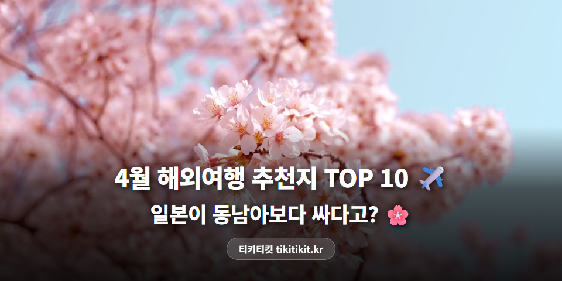
4월 해외여행, 일본이 동남아보다 싸다고요?
10곳 가격 비교해봤습니다 ✈️
안녕하세요, 티키티킷입니다.
4월이면 벚꽃 만개 + 동남아 마지막 건기
해외여행 하기 딱 좋은 시즌이죠.
근데 막상 검색하면
"어디가 날씨가 좋고, 어디가 싸고, 비행시간은 얼마나 걸리지?"
다 따로 찾아봐야 해서 귀찮더라고요.
그래서 날씨 · 물가 · 항공권 가격까지
한 글에 다 정리했습니다 👇
📊 날씨·물가·항공권 한눈에 비교
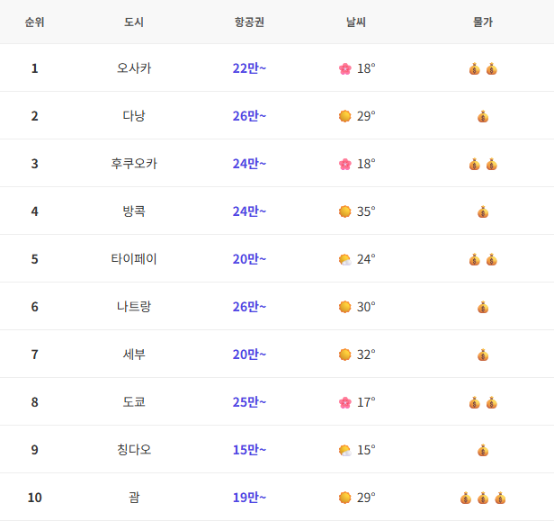
*항공권: 인천 출발 왕복 최저가 / 숙소: 인기 숙소 평균가 (2026년 4월 기준)
*물가: 💰 저렴 · 💰💰 보통 · 💰💰💰 비쌈
🌸 벚꽃이 보고 싶다면
오사카 (일본) 🇯🇵
🌸 벚꽃 만개 먹거리 천국4월 초 벚꽃 만개! 오사카성·조폐국 벚꽃길이 최고 절정. 3월보다 따뜻해서 야외 활동도 쾌적.
🌡️ 날씨: 12~21°C, 벚꽃 만개 (4월 초~중순)
💸 1일 예산: 숙소 18만 + 식비 4만 + 교통 1만 = 약 23만원
*숙소: 스위소텔난카이(~28만)·몬토레(~10만)·난바오리엔탈(~15만) 등 한국인 인기 호텔 평균
✈️ 항공권: 왕복 22만원~ (피치항공, 제주항공)
⏱️ 비행시간: 약 2시간
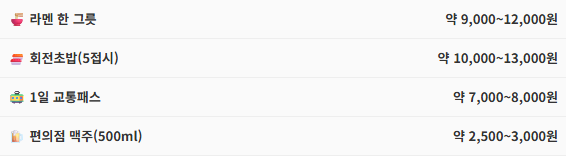
*4월 초 벚꽃 시즌은 성수기. 항공권·숙소 조기 예약 필수
후쿠오카 (일본) 🇯🇵
벚꽃 만개 항공권 저렴4월 초 벚꽃 만개 + 마이즈루 공원이 분홍빛으로. 한국에서 가장 가깝고 항공권도 저렴.
🌡️ 날씨: 12~20°C, 벚꽃 만개 (4월 초)
💸 1일 예산: 숙소 14만 + 식비 4만 + 교통 0.8만 = 약 19만원
*숙소: JR큐슈블로썸(~17만)·도미인(~11만) 등 한국인 인기 호텔 평균
✈️ 항공권: 왕복 24만원~ (진에어, 티웨이)
⏱️ 비행시간: 약 1시간 20분
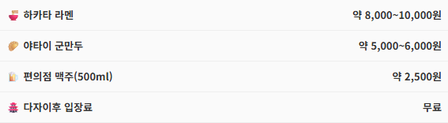
도쿄 (일본) 🇯🇵
🌸 벚꽃 절정 쇼핑 + 문화4월 초 벚꽃 만개. 우에노 공원·메구로 강변·신주쿠교엔이 가장 아름다운 시기.
🌡️ 날씨: 11~19°C, 벚꽃 만개 (4월 초~중순)
💸 1일 예산: 숙소 20만 + 식비 6만 + 교통 1.5만 = 약 27만원
*숙소: 시나가와프린스(~18만)·선루트(~15만)·신주쿠워싱턴(~22만) 등 한국인 인기 호텔 평균
✈️ 항공권: 왕복 25만원~ (피치항공, 티웨이)
⏱️ 비행시간: 약 2시간 30분
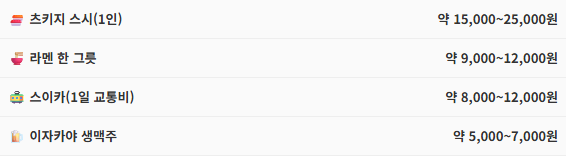
*벚꽃 시즌 숙소는 2~3개월 전에 마감되는 곳이 많음
🏖️ 바다에서 쉬고 싶다면
다낭 (베트남) 🇻🇳
가성비 최강 비치 + 맛집건기 한복판이라 비 거의 없고 평균 29도. 해수욕하기 가장 좋은 시즌. 습도도 낮아서 쾌적.
🌡️ 날씨: 25~32°C, 맑음 (건기)
💸 1일 예산: 숙소 20만 + 식비 4만 + 교통 0.5만 = 약 24만원
*숙소: 하얏트 리젠시(~25만)·풀만(~16만)·셰라톤(~20만) 등 한국인 인기 리조트 평균
✈️ 항공권: 왕복 26만원~ (비엣젯, 제주항공)
⏱️ 비행시간: 약 4시간 30분
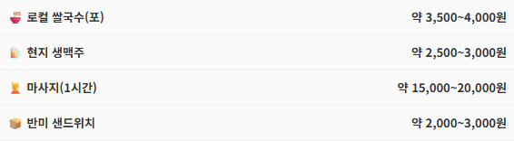
*관광지 식당은 로컬 대비 1.5~2배. 야시장은 흥정 필수
나트랑 (베트남) 🇻🇳
물가 저렴 바다 + 휴양건기 한복판! 일년 중 비 가장 적은 달. 다낭보다 조용하고 바다가 더 투명하다는 평.
🌡️ 날씨: 26~32°C, 맑음 (건기 베스트)
💸 1일 예산: 숙소 18만 + 식비 3.5만 + 교통 0.5만 = 약 22만원
*숙소: 빈펄(~15-25만)·인터컨티넨탈·셰라톤 등 한국인 인기 리조트 평균
✈️ 항공권: 왕복 26만원~
⏱️ 비행시간: 약 5시간
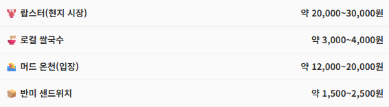
세부 (필리핀) 🇵🇭
액티비티 가성비건기 마지막 달! 비 올 확률 낮고, 바다 투명도 최고. 고래상어 투어·호핑 투어 강추.
🌡️ 날씨: 26~33°C, 맑음 (건기 마지막)
💸 1일 예산: 숙소 20만 + 식비 3.5만 + 교통 1만 = 약 24만원
*숙소: 모벤픽(~25만)·Jpark(~18만)·플랜테이션베이(~17만) 등 한국인 인기 리조트 평균
✈️ 항공권: 왕복 20만원~ (제주항공, 세부퍼시픽)
⏱️ 비행시간: 약 4시간 30분
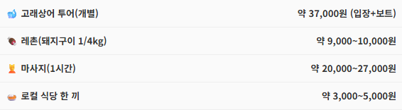
괌 (미국령) 🇬🇺
건기 막바지 가족여행건기 마지막 달이라 비 걱정 적음. 한국어 통하는 리조트가 많아 가족여행에 최적.
🌡️ 날씨: 26~31°C, 맑음 (건기 막바지)
💸 1일 예산: 숙소 33만 + 식비 6만 + 교통 1.5만 = 약 40만원
*숙소: 하얏트(~41만)·뒤짓타니(~39만)·롯데(~18만) 등 한국인 인기 리조트 평균
✈️ 항공권: 왕복 19만원~ (진에어, 제주항공)
⏱️ 비행시간: 약 4시간
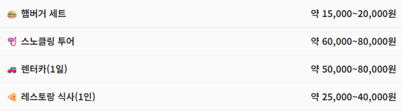
*미국 물가 적용. 항공권은 싸지만 현지 비용은 높은 편
🎉 축제·야시장이 끌린다면
방콕 (태국) 🇹🇭
🎉 송크란 축제 가성비4월 13~15일 송크란(물축제)! 전 세계에서 방콕으로 모이는 최대 축제. 한 번쯤 꼭 경험해볼 만한 이벤트.
🌡️ 날씨: 28~36°C, 더움 (1년 중 가장 더운 달)
💸 1일 예산: 숙소 19만 + 식비 3.5만 + 교통 0.5만 = 약 23만원
*숙소: 아바니 리버사이드(~17만)·센타라그랜드(~31만) 등 한국인 인기 호텔 평균
✈️ 항공권: 왕복 24만원~ (타이에어아시아)
⏱️ 비행시간: 약 5시간 30분
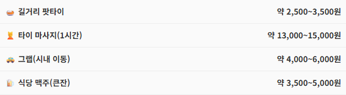
*송크란 기간(4/13~15) 항공·숙소 가격 급등. 최소 1개월 전 예약 권장
타이페이 (대만) 🇹🇼
야시장 천국 근거리 + 따뜻3월보다 확실히 따뜻해지고 비 적음. 반팔 입고 야시장 돌기 딱 좋은 날씨.
🌡️ 날씨: 19~27°C, 따뜻한 봄
💸 1일 예산: 숙소 16만 + 식비 4만 + 교통 0.7만 = 약 21만원
*숙소: 시저파크(~15만)·코스모스(~18만) 등 한국인 인기 호텔 평균
✈️ 항공권: 왕복 20만원~ (타이거에어, 제주항공)
⏱️ 비행시간: 약 2시간 30분
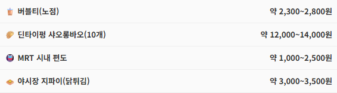
💰 가장 싸게 가고 싶다면
칭다오 (중국) 🇨🇳
최저가 초가성비항공권이 14만원대로 전 도시 중 최저가. 3월보다 따뜻해져서(15°C) 해안 산책·맥주 투어 컨디션 UP.
🌡️ 날씨: 9~17°C, 봄 날씨 (외투 챙기세요)
💸 1일 예산: 숙소 12만 + 식비 3만 + 교통 0.5만 = 약 15만원
*숙소: 인터컨티넨탈(~13만)·하얏트리전시 등 한국인 인기 호텔 평균
✈️ 항공권: 왕복 15만원~ (에어로케이, 산둥항공)
⏱️ 비행시간: 약 1시간 30분
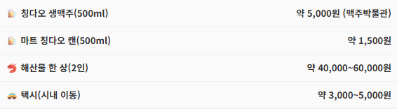
*해산물 시장에서 직접 구매 후 조리 요청하면 더 저렴
💡 아는 사람만 아는 절약법
1. 벚꽃 시즌(4월 초) 항공권은 빨리 잡으세요
일본 벚꽃 만개 시기 항공권은 최소 2~3주 전에 잡아야 합니다. 망설이면 가격이 급등해요.
2. 송크란(4/13~15) 방콕은 일찍 예약
태국 최대 축제 기간이라 항공·숙소 가격이 급등합니다. 1개월 전 예약 필수.
3. 화~목 출발을 노리세요
금~일 출발 대비 평균 5~10만원 저렴합니다.
4. 여행사별 비교는 필수
같은 노선도 여행사마다 3~10만원 차이가 납니다. 한 곳만 보면 손해예요.
💰 그래서 얼마면 갈 수 있나? (3박 기준)
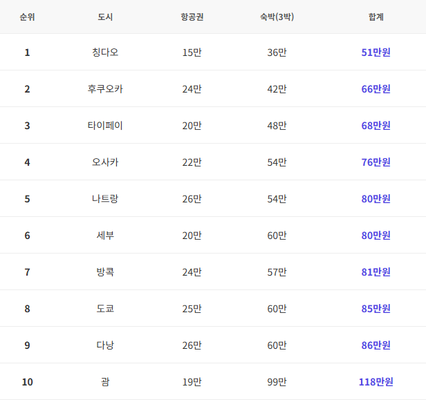
*항공권: 인천 출발 왕복 최저가 / 숙박: 한국인 인기 숙소 평균가 × 3박
*식비·교통비 별도. 실제 비용은 예약 시점에 따라 달라질 수 있습니다
✍️ 정리하면
의외로 일본이 동남아보다 싸다?
표를 보면 후쿠오카(66만)·오사카(76만)이 다낭(86만)·방콕(81만)보다 총비용이 낮습니다.
이유는 간단해요:
✈️ 거리가 가깝다 → 후쿠오카 1시간 20분, 오사카 2시간. 연료비가 적으니 항공권이 싸요.
💴 LCC 경쟁이 치열하다 → 피치·제주·진에어·티웨이 등 저가항공 노선이 많아 가격 경쟁이 붙습니다.
🏨 숙소 선택지가 다양하다 → 동남아는 리조트 위주라 단가가 높지만, 일본은 비즈니스호텔부터 선택 가능.
동남아는 현지 물가(식비·마사지·투어)가 저렴한 대신, 항공권+숙소 비용은 일본보다 높은 편이에요.
결론:
벚꽃 + 가성비 총비용 → 일본 🌸
해변 + 저렴한 현지 체감 물가 → 동남아 🏖️
#4월해외여행 #해외여행추천 #벚꽃여행 #땡처리항공권 #가성비여행 #티키티킷